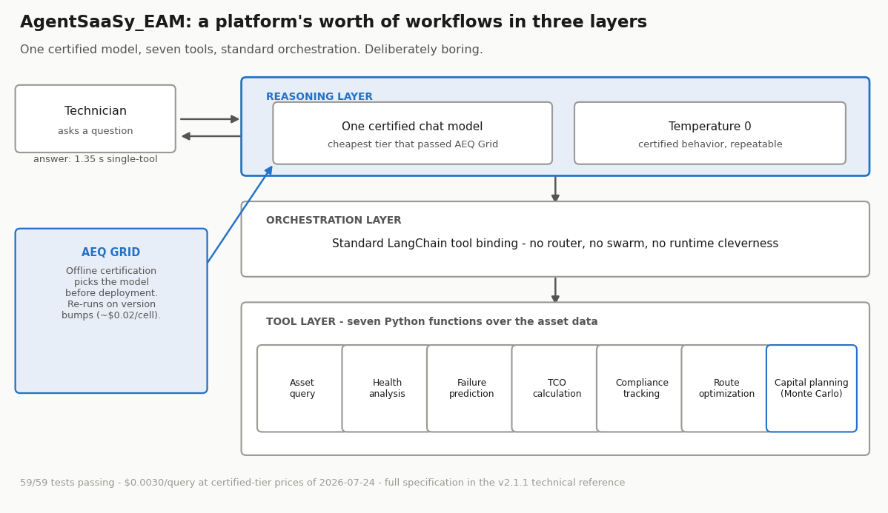
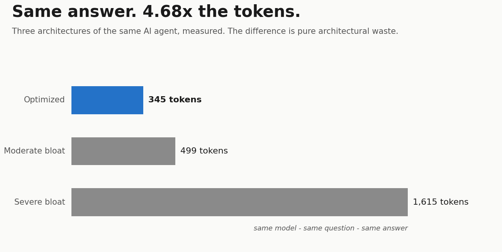
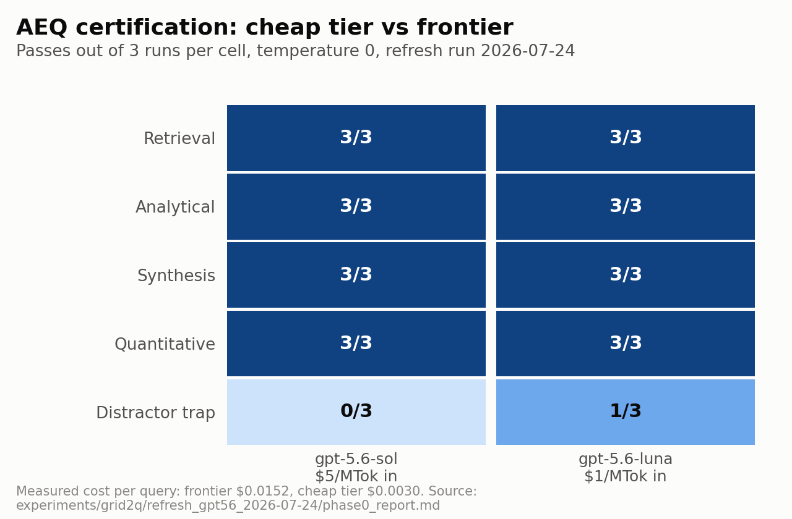

Author: Michael Valderrama | AI Agent Architect | Independent R&D © 2026 Version: 1.1 | August 2026 Status: Sections 1–8 are validated by controlled experiment (single-turn), unchanged from v1.0. Section 2.1 (added in v1.1) is definitional, not experimental. Section 9 (AEQ-L) is PROPOSED, pending external validation. Reference implementation: github.com/ibucketbranch/AgentSaasy_NGAI Terminology rule: Use “AI Agents” or “Agentic Agents.” Never “Agentic AI.”
This document is the canonical specification for the Agent Efficiency Quotient (AEQ). It consolidates the definition, measurement methodology, and application guidance previously distributed across the AEQ experiment handoffs, the AgentSaasy_NGAI reference implementation, and associated whitepapers. Anything that cites AEQ — articles, evaluator prompts, client deliverables, production dashboards — should cite this document as the source of truth.
AEQ applies to AI agent systems: LLM-based systems that select tools, execute actions, and produce answers or outcomes. Version 1.0 fully specifies AEQ for single-turn agent interactions (one query → one or more tool calls → one answer), which is the validated case. Section 9 extends the framework to autonomous agent loops as a proposed variant.
AEQ = Business Value Delivered / Tokens ConsumedAEQ is an architecture quality metric, NOT a cost metric. It measures the signal-to-noise ratio of an agent architecture: what fraction of the model’s capacity is doing useful work versus carrying architectural noise.
Two systems using the same model, answering the same query, can differ in efficiency by a factor of 4–5x purely on architecture (Section 8). AEQ makes that difference visible, measurable, and attributable to specific layers of the system.
Two named instruments apply this framework. Neither is “AEQ,” and neither redefines it. This section exists because the names have been conflated in derivative documents; where a conflict appears, this section governs.
Rule of use: the metric is cited as AEQ (this document). The certification program is cited as AEQ Grid (its pre-registration series). The operator, when built, is cited as Agent_AEQ. A sentence that needs one name to mean two of these is a sentence that needs rewriting.
Token prices fall continuously; a metric about token cost would depreciate with them. AEQ matters because three things do not get cheaper:
The bandwidth analogy: bandwidth got cheap, and performance engineering still mattered — because latency, congestion, and capacity planning never stopped being real. Tokens are following the same curve. Cheaper models won’t save bad architecture.
AEQ decomposes architectural waste into three independently addressable layers. Fixing one does not require touching the others: orchestration can be fixed without changing the model, and the prompt can be fixed without changing the tools.

Definition: System prompt tokens as a share of total tokens consumed.
Measurement: Exact, via tokenizer on the prompt string before any API call:
import tiktoken
enc = tiktoken.encoding_for_model("gpt-4o-mini")
system_prompt_tokens = len(enc.encode(SYSTEM_PROMPT))
prompt_overhead_ratio = system_prompt_tokens / total_tokensThis measurement is reproducible and requires no API dependency. Prompt overhead is paid on every query — it is the highest-leverage layer because its waste multiplies by query volume.
Reference values (validated): optimized architecture 13.9%; severe bloat 29.4%.
Common anti-pattern: safety-by-verbosity — repeating role descriptions, redundant guardrail instructions, and describing every tool when the query needs one.
Definition: Tool calls made relative to the minimum the query actually required.
Measurement: (a) count of tool calls vs. minimum necessary; (b) ratio of tool-output tokens vs. an optimized baseline, measured via tokenizer on sampled tool outputs. In the reference experiment: the query required 1 tool call; the bloated architecture forced 3.
Each unnecessary tool call adds input tokens (the call), output tokens (the result re-entering context), latency (a full round trip), and cost — with no added business value.
Common anti-pattern: forced multi-tool policies (“always use at least 3 tools for comprehensive analysis”).
Definition: Response verbosity beyond what the answer requires.
Measurement: Output tokens vs. a capped baseline delivering equivalent content. Reference values: ~95 tokens (capped) vs. ~520 tokens (uncapped) for the same substantive answer — same conclusion, 5x the words.
Common anti-pattern: no token budget in the prompt; the model is verbose by default and verbosity is mistaken for thoroughness.
“Business Value Delivered” is not scored on an absolute scale in v1.0. It is held constant via an equivalence rubric: two architectures are compared only when they deliver the same substantive answer.
An equivalence rubric must specify, before the experiment, the elements that constitute the answer. Reference rubric (AgentSaasy_NGAI): same critical asset count (12), same asset IDs cited, same actionable recommendation. Qualitative flag raised if conclusions diverge; diverging runs are not compared.
Design consequence: when value is held equal, the token delta between architectures is, by construction, pure architectural waste. This is what makes AEQ workable without solving general value quantification.
Known sacrifice: the rubric supports pairwise comparison, not absolute scoring. AEQ v1.0 answers “how much more efficient is architecture A than B at delivering this outcome,” not “what is this system’s standalone AEQ score.” Absolute scoring is deferred (Section 11).
The canonical experiment design, refined through independent critique (Cursor review, 8 issues resolved):
In production, AEQ functions as the primary architecture-quality KPI:
Controlled experiment, AgentSaasy_NGAI (enterprise asset management), gpt-4o-mini-2024-07-18, temperature 0, query: “What are the critical assets in the portfolio?” — hybrid simulation (tiktoken-exact inputs, disclosed output estimates) with real-API validation within acceptable variance.
| Metric | Optimized | Moderate Bloat | Severe Bloat |
|---|---|---|---|
| System prompt tokens | 48 | 87 | 475 |
| Total tokens | 345 | 499 | 1,615 |
| Tool calls | 1 | 1 | 3 |
| Prompt overhead ratio | 13.9% | 17.4% | 29.4% |
| Token ratio vs. baseline | 1.0x | 1.45x | 4.68x |
| Cost ratio vs. baseline | 1.0x | 1.79x | 5.04x |

All three architectures delivered equivalent business value under the rubric. Same model, same query, different architecture: 4.68x token difference, 5.04x cost difference. Notable secondary finding: on simple queries the model chose the correct tool even under moderate bloat — the model compensates for bad prompts until orchestration is forced; in a forced multi-tool test, 3x cost and 3.6x latency for identical answers.

Status warning: Everything in this section is a design proposal. It has not been validated by experiment. External validation (Section 10) is in progress; this section will be revised to “validated” or amended in a future version based on results. Do not cite AEQ-L numbers as established findings.
Single-turn AEQ assumes the minimum necessary work is knowable in advance (“this query needs 1 tool call”). Autonomous agent loops — reason, act, observe, repeat until a stopping condition — break that assumption: minimum iteration count is generally unknowable a priori, context grows per cycle, and runs may end in a deliberate halt rather than an answer.
Proposed loop-native form:
AEQ-L = Successful Outcomes (including correct refusals) /
Cumulative Tokens (all iterations, retries, and cleanup)Design decisions embedded in this form:
Open questions deliberately deferred to validation: how outcome success is judged (binary goal-completion vs. milestone rubric vs. independent judge model); how halt-correctness is adjudicated; whether lucky fast convergence needs run-count normalization; how verification spend that buys reliability is distinguished from waste.
In an agent loop, validation is not a stage — it is a function call, and its call site is the decision fork. Wherever the loop branches (continue vs. halt, cheap tier vs. expensive tier, accept vs. retry, tool A vs. tool B), the fork invokes an external check and the check’s verdict selects the branch. The fork and the validation are the same event: no fork, nothing to validate; every fork, a validation call site with a uniform shape — pause, call an external validator, branch on the verdict. The model never picks its own path unsupervised.
Routing gates and coherence gates in gated-loop architectures are both instances of this one pattern, asking different questions at different forks (“what tier does this need?” / “is this output grounded?”).
Two economic rules follow:
AEQ-L is the instrument that makes rule 2 empirical instead of a guess: A/B each fork’s check (gate on vs. gate off) and keep it only if AEQ-L rises. This yields the layered architecture in one sentence:
Forks call validators, validators pick branches, AEQ validates the validators. Three layers, no self-grading anywhere.
AEQ never runs at the forks — it runs above them, measuring whether each fork’s check earns the tokens it costs.
AEQ results intended for publication or client decisions must satisfy the independence rule:
Standard instruments: the AEQ External Validation Prompt (generic template) and filled instances per target project.
Deliberately out of scope, in priority order:
| Version | Date | Changes |
|---|---|---|
| 1.0 | July 2026 | First canonical spec. Consolidates experiment handoffs v1–v2, whitepaper definitions, and validation protocol. Adds AEQ-L as proposed extension, including §9.6 Fork-Gated Validation (fork = validation call site; forks call validators, validators pick branches, AEQ validates the validators). |
| 1.1 | August 2026 | Adds §2.1 Related Named Instruments: AEQ Grid (certification program) and Agent_AEQ (proposed operator) formally named as distinct applications of the framework — the metric, the program, and the operator are three names for three jobs. Resolves the naming collision identified 2026-07-28. §11.5 cross-references the swarm coordination experiment. No changes to validated Sections 1–8. First in-repo copy of the canonical spec. |
Michael Valderrama | AI Agent Architect | Independent R&D © 2026 | github.com/ibucketbranch/AgentSaasy_NGAI | medium.com/@michael_valderrama